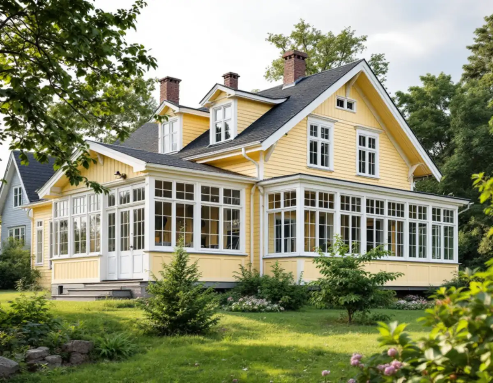
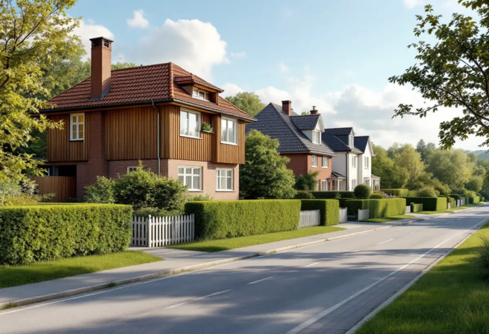
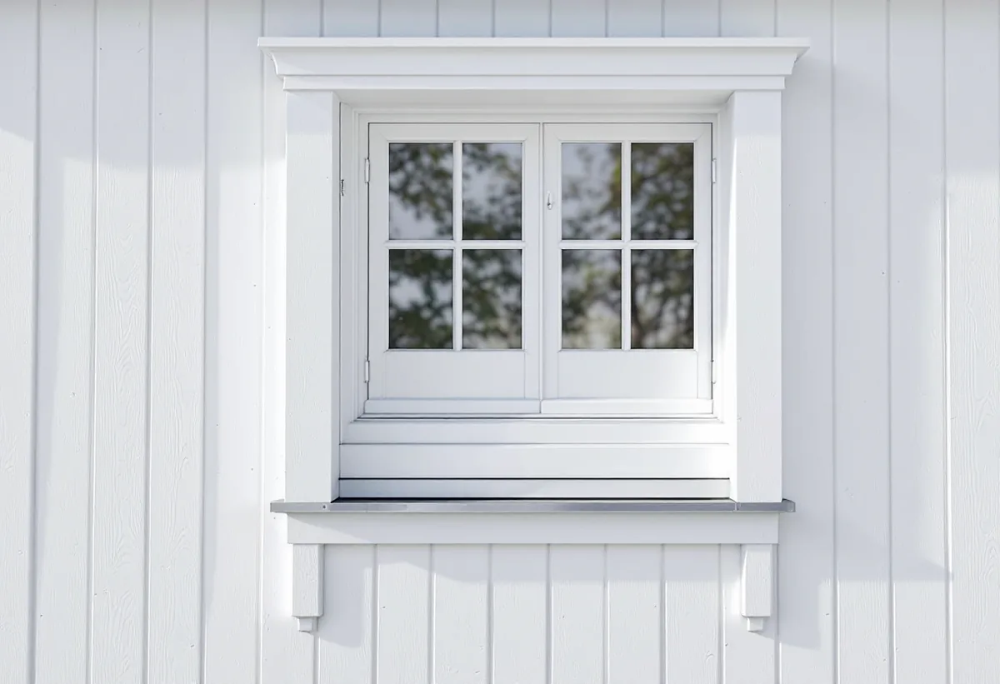

Kartan
Stadsmuseets karta och detaljplanen kontrolleras för fastigheten.

I Hägersten står hundratals villor, och i Mälarhöjden är många av dem trähus med glasverandor och fönster från olika tider.
Beskriv jobbet kort.
Något blev fel. Kontrollera uppgifterna eller ring 08 12 410 276.
Vi tittar på jobbet på plats innan du får offert.
Du ser vad som ingår och vad det kostar.
Vi drar av ROT direkt och sköter ansökan.
Geal Entreprenad AB, Bromma. Org.nr 559303-7566.

Geal Entreprenad AB byter fönster i villor och radhus i Hägersten och tar reda på om bytet kräver lov innan fönstren beställs.
Stadens strategi för småhus- och villaområden beskriver hur villasamhällen som Mälarhöjden växte upp efter privata initiativ genom större markförvärv. Trä var det dominerande fasadmaterialet, även om puts förekom, och glasverandor, takkupor, snickarglädje och färgsättning gav stadsdelarna den variation som syns än i dag. I strategins tabell är Mälarhöjden markerad som kulturhistoriskt värdefull miljö och som område med generösa byggrätter.
Enligt stadens områdesfakta för 2025 finns 988 småhus med äganderätt i Mälarhöjden och 955 i stadsdelen Hägersten. Villastäderna har förtätats successivt, så samma gata kan ha hus från flera decennier. Vi utgår därför från det hus som fönstren ska sitta i, inte från vad som var vanligt det år det byggdes.

Stockholms stad hänvisar till Stadsmuseets karta som en första indikation. Du behöver söka bygglov för åtgärder som annars kan vara lovfria om huset ligger inom ett område som översiktsplanen pekar ut som särskilt kulturhistoriskt värdefullt, grön ring i kartan, om det är markerat blått eller grönt eller om detaljplanen har skyddsbestämmelser. Är huset gult eller grått och inget annat gäller behövs inget lov.
Staden räknar bland annat byte av material eller kulör, ändrad storlek, placering, profilering eller upphängning och ändrad indelning som förändringar av fönster. Byter du till exakt samma utseende är frågan enklare än om spröjsen försvinner eller sidohängda bågar blir vippfönster. Alla ändringar ska göras varsamt och med hänsyn till byggnadens karaktär.
Boverket refererar en dom från Mark- och miljööverdomstolen om ett enbostadshus från mitten av 1970-talet som byggts med spröjsade fönster i en miljö av riksintresse. Ägaren ville byta till fönster utan spröjs, men domstolen bedömde att det inte var en varsam ändring med hänsyn till husets karaktärsdrag, och att det inte hade visats några större kostnadsskillnader mellan fönster med och utan spröjs.
Domstolen utgick från den aktuella byggnadens karaktärsdrag och inte från vad som var tidstypiskt för hus från 1970-talet. I en villastad med hus från många epoker är det just så vi tänker när vi föreslår fönster: samma indelning, samma proportioner och en profil som passar huset.
Äldre handlingar som stadsbyggnadskontoret har på fastigheten kan du söka fram i e-tjänsten Bygg- och plantjänsten. Staden har också äldre miljöprogram och typritningssamlingar som kan beställas. De har ingen juridisk status i bygglovsprövningen men ger kunskap om områdets karaktär, och strategin för småhus- och villaområden rekommenderas som stöd innan du söker lov.
Vi mäter upp fönstren på plats och jämför med ritningarna, och behövs lov tar vi fram fasadritning, kulörer och foton. Om villans tak kan du läsa under takläggare i Hägersten, om fasaden under fasadrenovering i Hägersten och om tjänsten i stort under fönsterbyte.
Ska villan få ett nytt fönster där det inte fanns något förut påpekar Stockholms stad att nya fönster och ytterdörrar kan ge ökad insyn och bli en olägenhet för grannarna, och staden råder dig att informera grannen innan du söker lov. Nya öppningar kan också påverka husets bärande konstruktion så att den behöver förstärkas.
Stadsmuseets karta och detaljplanen kontrolleras för fastigheten.
Fönster, verandor och karmar mäts upp och fotograferas.
Fönster, montage, foder och efterarbete står var för sig.
Fasadritning, kulörer och foton när lov krävs.
Fönstren byts, drevas och tätas, och foder och bleck sätts tillbaka.
Vi går igenom fönstren och skötseln med dig.
För ett småhus räknar Skatteverket att reparera eller byta ut fönster och montera bullerglas och isolerglas som rotarbete. Är bostaden yngre än fem år får arbetet bara återställa det ursprungliga skicket.
Avdraget är högst 30 procent av arbetskostnaden och högst 50 000 kronor per person och år, och material och resor ger inget avdrag. Geal drar avdraget direkt på fakturan.
Antal och storlek på fönstren, spröjs och indelning, glas och beslag, om fönstren tillverkas efter uppmätning, verandans fönster och om bygglov behövs. Efter ett gratis platsbesök får du ett skriftligt kostnadsförslag.
Byta eller renovera fönster.
Fönsterbyte i Stockholm →Takbyte, takbesiktning och plåtarbeten.
Takläggare i Hägersten →Mälarhöjden, Hägerstensåsen och tre epoker av villor.
Takrenovering i Hägersten →Kuperad villastad och vattentryck.
Attefallshus i Hägersten →Bostadsrätten, golvbrunnen och fallet.
Badrumsrenovering i Hägersten →Kuperad tomt, stödmur och dränering.
Byggföretag i Hägersten →Trävillor, färglager och skonsam färgborttagning.
Fasadmålning i Hägersten →Småstugor, typritningar och panel.
Fasadrenovering i Hägersten →Fönster från olika epoker.
Fönsterrenovering i Hägersten →Golv i källare och suterrängvåning.
Golvläggare i Hägersten →Slipa och spara parketten i en äldre lägenhet.
Golvslipning i Hägersten →Efterkrigstidens lägenheter och asbestprov.
Köksrenovering i Hägersten →Lägenheter, villor vid Mälaren och radhus.
Målare i Hägersten →Låglutande tak och takavvattning i Hägersten.
Plåtslagare i Hägersten →Verandor, dörrar och snickeridetaljer på villan.
Snickare i Hägersten →Samma material eller ett nytt.
Takbyte i Hägersten →Villor och lägenheter i samma stadsdel.
Tapetsering i Hägersten →Villastad, radhuslänga och brandskydd.
Tillbyggnad i Hägersten →Villan i Mälarhöjden eller lägenheten.
Totalrenovering i Hägersten →Eller ring 08 12 410 276, mån–fre 08–17.
Beskriv jobbet kort.
Något blev fel. Kontrollera uppgifterna eller ring 08 12 410 276.